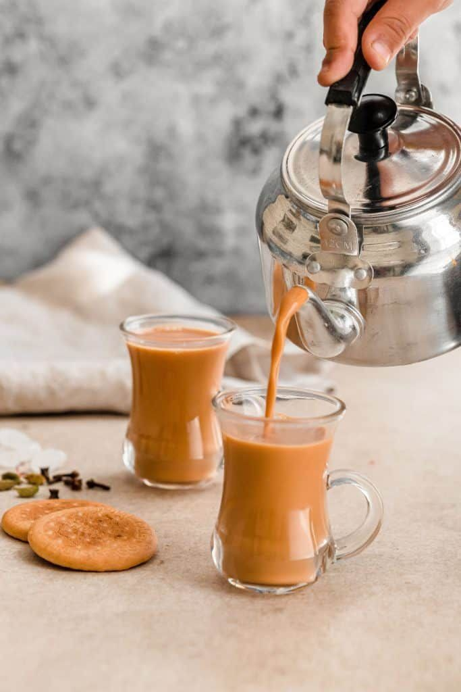
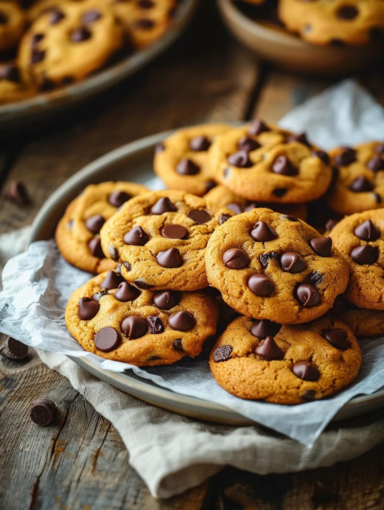

Trushti's Recipe Journal
Recipes
Lonely Noodles
By: Trushti S.
Servings
1 Bowl
Prep Time
5 min
Cook Time
10 min
More

Quick Chai
Servings: 1-2 cups
Cook Time: 2 min
+

Mood Cookies
Servings: 8-10
Cook Time: 12-15min
+